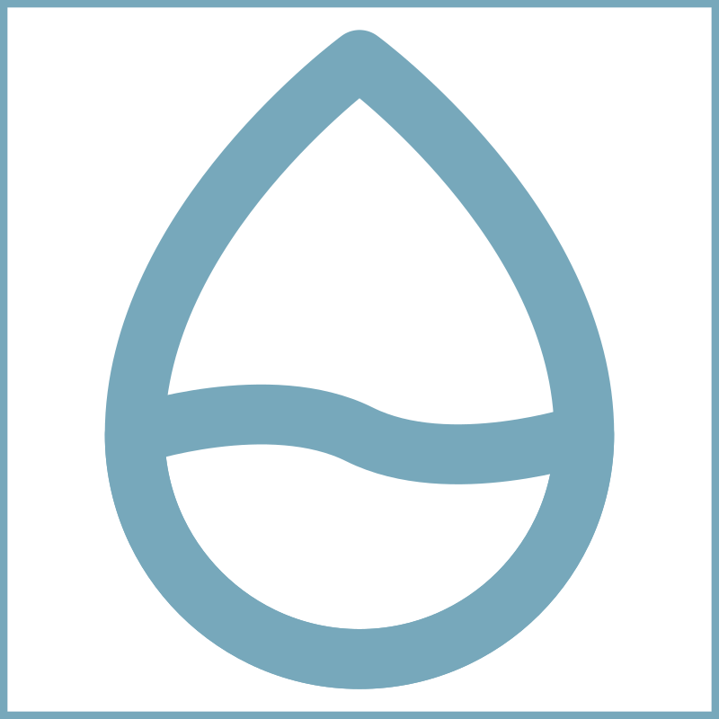
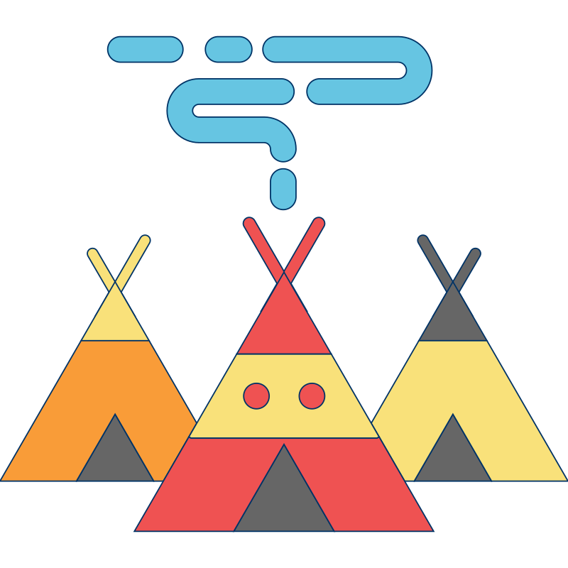

Goal
Rotate every pipe until clean water reaches the village.
Avoid
Contaminated pipes reduce your score and block the flow.
Bonus
Collect floating water drops for extra points.
Did You Know?
Every completed puzzle represents bringing clean water to another community.
Water Connect
Inspired by the mission of charity: water to bring clean, safe drinking water to every person.